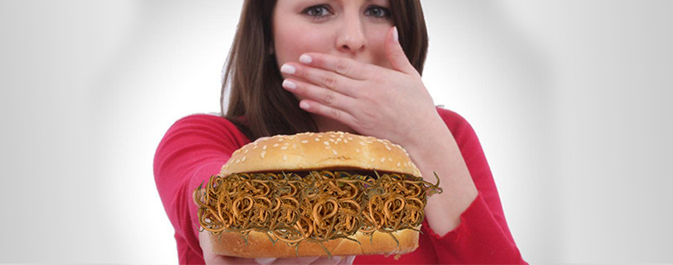

Die Geschichte meines Kampfes gegen Parasiten
Können Sie sich vorstellen, wie es ist, wenn man merkt, dass fremde Organismen in einem parasitieren? Es kann nicht mit irgendwelchen Horrorfilmen verglichen werden! Vor allem, wenn Sie ein 23-jähriges Mädchen sind. Nur Depressionen und der zwanghafte Wunsch, die Parasiten in Ihrem Körper loszuwerden. Leider musste ich das alles alleine erleben... Geschichte ist nichts für Nervöse.
Alles begann mit meiner unbändigen Liebe zum Straßenessen (Street Food). Bis vor kurzem waren meine Lieblingsbeschäftigungen Straßenfeste, Jahrmärkte und Themenparks. Ich probierte wirklich gerne alles, was die Straßenverkäufer an den fettigen Ständen kochten. Nichts Schlimmes außer Fettablagerungen an den Seiten, die mir dieses Essen gebracht hat. Bis zu einem Punkt...
Wie kam es zu mir?
Es gab einen hellen Stand vor dem Universitätsgebäude, in dem ich studierte. Am selben Tag ging ich zwischen den Unterrichtsstunden hin, um ihr Sortiment zu beurteilen. Ein lächelnder Verkäufer riet mir "neu". - ein Verkaufsschlager. Vom Aussehen her war es ein einfaches Essensdesign und versprach, schmackhaft zu sein. Ein paar Minuten später hatte ich ein hartes Brötchen in der Hand mit schlecht gebratener Wurst, aus der die Mayonnaise floss. All dies wurde unpassend gewürzt und mit Basilikumblättern verziert. Um ehrlich zu sein, es war erschreckend. Aber das Gefühl des Hungers und eine kurze Mittagspause veranlassten mich, die FALSCHE LÖSUNG zu wählen. Ich aß diese schmierige Ekelhaftigkeit schnell auf und ging zurück an die Universität.
Die Folgen meines schrecklichen Abendessens kamen schnell. In ein paar Stunden kam ich nicht mehr aus der Toilette heraus. Ich musste zu den letzten Unterrichten gehen, genug Wasser holen und für meine Fehler zu Hause bezahlen. Wenn sich alles darauf beschränkt hätte... Zu meiner großen Überraschung begann ich in den nächsten Wochen abzunehmen. Seltsam, dass der Appetit mit dreifacher Kraft zurückkam und ich aß noch mehr als vorher. Meine Mitbewohnerin bemerkte, dass ich blass und müde war.
Der schlimmste Alptraum meines Lebens
Zuerst dachte ich, es sei wegen der nächsten Sitzung. Aber der Juckreiz ließ mich schnell denken, dass es nicht um Stress ging. Als Studentin entschied ich mich, Laborassistenten in der Universitätsabteilung einzusetzen, um meine schrecklichen Vermutungen zu bestätigen. Ich brauchte nicht lange zu fragen, sie akzeptierten mich sofort als "Versuchskaninchen". Ich bedauerte es später sehr, denn am nächsten Tag wusste jeder, dass ich SPULWÜRMER hatte!
Die Laborantin schrie vor Entsetzen, dass in meinem Körper riesige Würmer gewachsen sind, die dringend herausgeschnitten werden müssen. Als ich es zum ersten Mal hörte, übergab ich mich buchstäblich vor einer ganzen Gruppe von Studenten auf den Boden. Das Leben hat mich nicht gleichzeitig auf diesen moralischen und physischen Horror vorbereitet. Einige meiner Gruppenkameraden begannen zu schreien, ich sei ein Zombie und könne alle anstecken. Ich habe nicht einmal daran gedacht, nach alles an der Uni zu kommen. Ich war völlig von der Depression absorbiert. Mehrere Tage lang weinte ich im Bett und unterbrach regelmäßig, um zur Toilette zu laufen.
Die richtige Entscheidung im Kampf gegen Parasiten
Nur mein Mitbewohner, der mir einfach nur Leid tat, half mir, darüber hinwegzukommen. "Morgen werden es alle vergessen haben, Natalie. Das Wichtigste ist, diese Monster loszuwerden", versuchte sie, mich zu beruhigen. Mir wurde klar, dass sie Recht hatte. Und dann hörte ich plötzlich wieder diesen Laboranten in meinem Kopf: "Es besteht die dringende Notwendigkeit, die Würmer herauszuschneiden". Chirurgie? Wie kann ein Student Geld für eine Operation bekommen? Außerdem hatte ich Angst davor, auch nur daran zu denken, wie die Chirurgen an mir herumfummeln würden.
Ich habe mein Budget kalkuliert und erkannt, dass ich nur eine Chance habe, die Parasiten zu besiegen. Und wie glücklich ich bin, dass ich dann die richtige Entscheidung treffen konnte. Das war die -Bestellung, von dem ich von meinem Universitätsprofessor erfahren habe. Ich las schnell die Meinungen, fand heraus, dass die Zusammensetzung natürlich ist, und bestellte sie auf der offiziellen Website des Herstellers.
So hat mein Leben im neuen Semester begonnen. Die Pillen haben mir recht schnell geholfen, mit dieser Wirkung hatte ich nicht einmal gerechnet. Aufgrund meines Verdachts beschloss ich, dafür zu sorgen, dass mein Körper diesmal in der Klinik und nicht in der Universitätsabteilung sauber war. Die Analysen, die für mein letztes Geld gemacht wurden, haben bestätigt, dass ich absolut sauber bin! Mit den Ergebnissen ging ich direkt zu dem Studenten im Labor, der mich erschreckt und entehrt hat. Der Typ entschuldigte sich aufrichtig und verbreitete ebenso schnell das Gerücht, ich bin ein "sauberer" Mann.
Man könnte hier einen Punkt setzen, aber die Geschichte ist noch nicht zu Ende. Es stellte sich heraus, dass dieser farbenfrohe Kiosk während seines Betriebs viele weitere Studenten mit seinen Spulwürmer infizierte. Drei Studenten aus meiner Gruppe (ja, ja, das waren diejenigen, die mich kürzlich verspottet hatten) fragten mich, wie ich es geschafft habe, die Parasiten so schnell loszuwerden. Natürlich hatte ich Mitleid mit ihnen und gab ihnen allen einen Link zur -Bestellung. So ist es mir gelungen, noch populärer zu werden. Ich hoffe, dass meine Geschichte Ihnen in Ihrem Kampf gegen Parasiten helfen wird. Und ein Tipp zum Schluss: Lassen Sie sich nicht von Straßenessen faszinieren und treffen Sie einfach die richtigen Entscheidungen! Tschüss!
27 Kommentare
Ich weiß alles darüber. Natürlich musste ich keine öffentliche Schande erleben, aber die Rundwürmer sind irgendwie in meinen Körper gelangt, und das mit 29 Jahren! Es ist gut, dass ich bestellt habe, um diesen fiesen Wurm rechtzeitig loszuwerden. Wenn ich mir vorstelle, ich hätte ein Inkubator für ihre Fortpflanzung sein können, ALPTRAUM! Mädchen, passt auf, was ihr esst!
Wie oft verspreche ich mir selbst, dass ich nur kontrolliertes Essen essen werde. Aber selbst im elegantesten Restaurant kann man sich vergiften. Ich habe es selbst erlebt. Wir haben unseren Mann im Urlaub vergiftet, wir haben viel Geld für ein Meeresfrüchteessen bezahlt. Dann mussten wir über einen Monat lang behandelt werden... Schade, dass ich damals nichts von wusste. Ich werde jetzt im Voraus bestellen, damit immer dringende Hilfe zur Verfügung steht.
Wirklich? Nichts für die Nerven! Ich habe mich beim Lesen fast übergeben... Entsetzen und Alptraum! Jetzt kann ich keine Burger mehr auf der Straße essen. Ich dachte, dass nur Kinder mit den Würmern infiziert werden können.